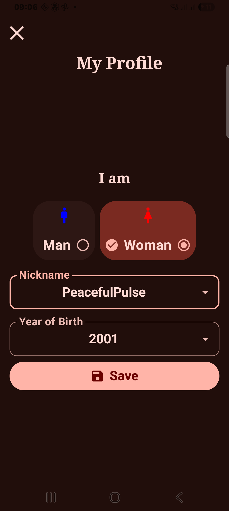
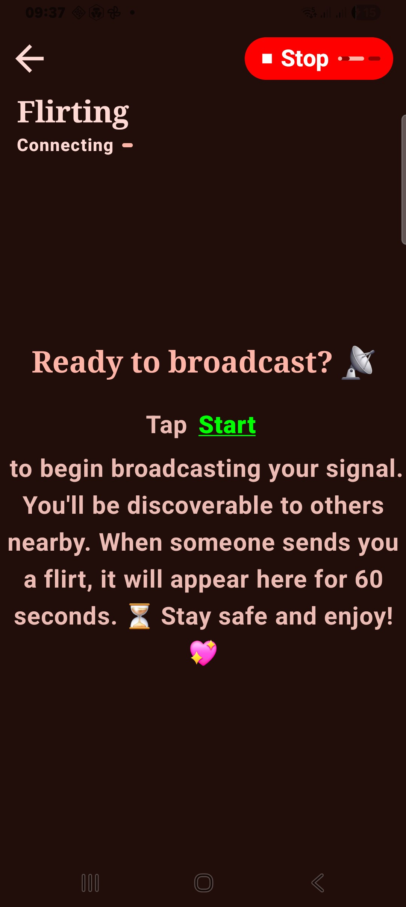
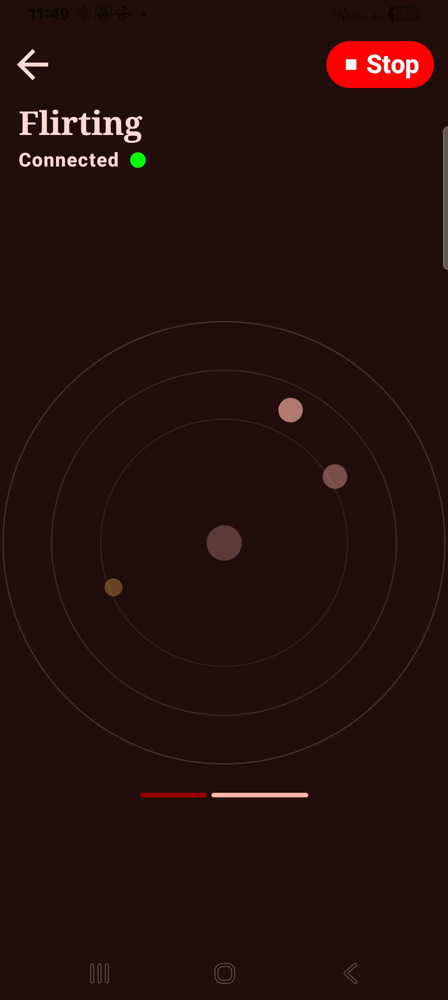
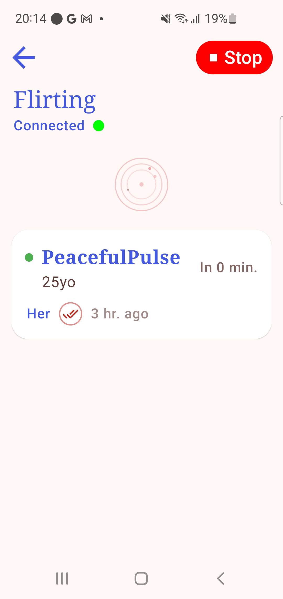
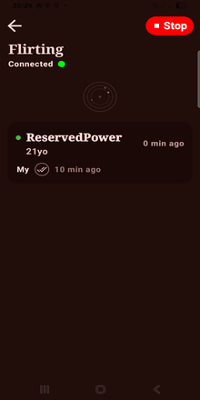
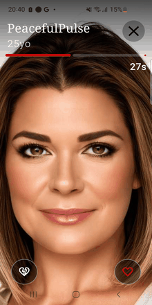

The Vibe in Action
A picture is worth a thousand sparks.

Meet Teo and Mia. They just met, shared a smile, and their digital footprints have already vanished. The world's first truly ephemeral proximity-match app.
A picture is worth a thousand sparks.
Two people. Two modes. Zero traces.
Five moments. One real connection.
Teo is at a rooftop bar. His phone vibrates—his radar has found a "Spot." Mia is nearby, broadcasting her Connection Tag.
Teo takes a quick, authentic selfie. No profile bio—just his face and the present moment. He sends a Flirt.
On Mia's screen, Teo's face appears. A 60-second countdown begins. She sees his smile. She has one minute to decide.
Mia likes his energy and taps Reply.
Their screens "Twin," and a temporary chat opens. As they start talking in real life, FlirtSpot automatically wipes the media from both devices. The connection is real; the data is gone.
Six screens. One seamless flow.






From anonymous discovery to encrypted connection — every step is designed to protect your privacy while creating genuine human moments.
Choose your role — Man or Woman. This choice is permanent, private, and never shared. It determines your mode of interaction in the FlirtSpot ecosystem.
Your role shapes your experience
QR Code for instant sharing
In Woman Mode, you become a Beacon. Set your Connection Tag — a mood, interest, or vibe — and let nearby FlirtSpots discover you via your unique QR code.
In Man Mode, your radar scans the room for nearby Beacons. Pulsing dots appear on-screen — each one a real person nearby. Within 150 meters, the magic begins.
Scanning… 4 people nearby
Selfie + 60s timer = Flirt
Found someone interesting? Tap Send Flirt. Your camera opens, you snap an authentic selfie, and it's sent with a 60-second expiration timer. No filters, no bios — just the real you.
On the receiver's screen, your selfie appears full-screen with a pulsing red countdown. They have 60 seconds to decide: reply or let it vanish forever. No pressure, no traces.
The clock is ticking…
🔒 Auto-deletes when you disconnect
When both sides connect, your screens "Twin" — a secure, ephemeral chat opens. Messages are end-to-end encrypted and auto-wipe when the conversation ends. The connection is real; the data is gone.
Privacy isn't a feature. It's the architecture.
Using FLAG_SECURE technology, we block all screenshots and screen recordings of received selfies. Your face stays your face.
No phone numbers, no email, no social accounts. You are a Connection Tag—nothing more. Be yourself without a digital identity attached.
Our relay server is built on a "Forgetful" architecture. No databases, no logs, no history. If you disconnect, we forget you existed.
Everything you need to know. Nothing you don't.
Anonymous by design. Users are identified by permanent user-mode nicknames from the official FlirtSpot registry.
I love that I don't have to spend hours tweaking a profile bio. I just opened the app at a festival, saw a 'Spot' nearby, and sent a spontaneous selfie. We met up 5 minutes later. It's the closest thing to just walking up and saying 'Hi' in the digital age.
The radar discovery is addictive. It turns a boring wait at a coffee shop into a potential moment. Knowing that my 'Flirt' and her response will vanish into thin air after we talk makes the whole experience feel safe and low-pressure. No digital baggage.
I'm very protective of my privacy, so the Connection Tag system is a game-changer. I only share my signal when I'm actually feeling social. If I'm not vibing with an incoming Flirt, it disappears in 60 seconds anyway. I never have to worry about a permanent inbox full of creeps.
The fact that FlirtSpot blocks screenshots is why I finally feel comfortable sending a selfie to a stranger. It's empowering to know that my face isn't being saved to some random gallery. The ephemeral timer really forces both of us to stay in the present.
We were at a basement concert with zero cell service, but FlirtSpot's P2P mode still worked! I broadcasted my tag, and someone two tables over sent a Flirt. We 'Twinned' and spent the rest of the night dancing. No internet, no server, just a real connection.
I hate how dating apps keep your data forever. With FlirtSpot, when I uninstall the app or even just disconnect, I'm gone. No accounts to delete, no ghost profiles. It's perfect for someone like me who values a clean slate and ephemeral interactions.